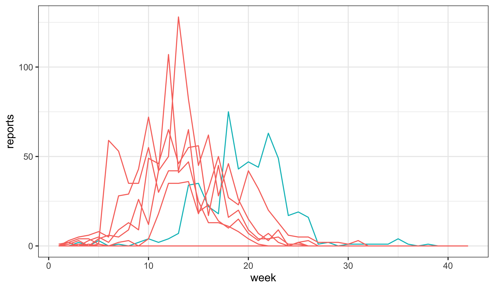

source("model_measSIR.R")Direct maximization of the particle filter likelihood
Produced in R version 4.4.0.
In the toy example we’ve been working with, the default parameter set is not particularly close to the MLE. One way to find the MLE is to try optimizing the estimated likelihood directly. There are of course many standard optimization algorithms we might use for this. However, three issues arise immediately:
- The particle filter gives us a stochastic estimate of the likelihood. We can reduce this variability by making \(J\) larger, but we cannot make it go away. If we use a deterministic optimizer (i.e., one that assumes the objective function is evaluated deterministically), then we must control this variability somehow. For example, we can fix the seed of the pseudo-random number generator (RNG). A side effect will be that the objective function becomes jagged, marked by many small local knolls and pits. Alternatively, we can use a stochastic optimization algorithm, with which we will be only be able to obtain estimates of our MLE. This is the trade-off between a rough and a noisy objective function.
- Because the particle filter gives us just an estimate of the likelihood and no information about the derivative, we must choose an algorithm that is “derivative-free”. There are many such, but we can expect less efficiency than would be possible with derivative information. Note that finite differencing is not an especially promising way of constructing derivatives. The price would be a \(n\)-fold increase in cpu time, where \(n\) is the dimension of the parameter space. Also, since the likelihood is noisily estimated, we would expect the derivative estimates to be even noisier.
- Finally, the parameters set we must optimize over is not unbounded. In particular, we must have \(\beta,\gamma>0\) and \(0<\rho,\eta<1\). We must therefore select an optimizer that can solve this constrained maximization problem, or find some of way of turning it into an unconstrained maximization problem. For example, we can transform the parameters onto a scale on which there are no constraints.
Let’s try this out on the toy SIR model we were working with, reconstructed as follows.
Here, let’s opt for deterministic optimization of a rough function. We’ll try using optim’s default method: Nelder-Mead, fixing the random-number generator seed to make the likelihood calculation deterministic. Since Nelder-Mead is an unconstrained optimizer, we must transform the parameters. The following introduces such a transformation into the pomp object.
measSIR |>
pomp(partrans=parameter_trans(log=c("Beta","Gamma"),logit=c("Rho","Eta")),
paramnames=c("Beta","Gamma","Eta","Rho")) -> measSIRWe can think of the parameters that we furnished when creating measSIR as a kind of reference point in parameter space.
coef(measSIR) Beta Gamma Rho k Eta N
1.5e+01 5.0e-01 5.0e-01 1.0e+01 6.0e-02 3.8e+04 The following constructs a function returning the negative log likelihood of the data at a given point in parameter space. The parameters to be estimated are named in the est argument; the others will remain fixed at the reference values. Note how the freeze function is used to fix the seed of the RNG. Note too, how this function returns a large (and therefore bad) value when the particle filter encounters and error. This behavior makes the objective function more robust.
neg.ll <- function (par, est) {
try(
freeze({
allpars <- coef(measSIR,transform=TRUE)
allpars[est] <- par
theta <- partrans(measSIR,allpars,dir="fromEst")
pfilter(measSIR,params=theta,Np=2000)
},
seed=915909831
)
) -> pf
if (inherits(pf,"try-error")) 1e10 else -logLik(pf)
}Now we call optim to minimize this function:
## use Nelder-Mead with fixed RNG seed
estpars <- c("Beta","Gamma","Eta")
optim(
par=coef(measSIR,estpars,transform=TRUE),
est=estpars,
fn=neg.ll,
method="Nelder-Mead",
control=list(maxit=400,trace=0)
) -> fit
mle <- measSIR
coef(mle,estpars,transform=TRUE) <- fit$par
coef(mle)
fit$val
lls <- replicate(n=5,logLik(pfilter(mle,Np=20000)))
ll <- logmeanexp(lls,se=TRUE); llWe plot some simulations at these parameters.
mle |> simulate(nsim=10,format="data.frame",include.data=TRUE) -> simsThe data are shown in blue. The 10 simulations are shown in red.

Exercise: Global maximization
The search of parameter space we conducted above was local. It is possible that we found a local maximum, but that other maxima exist with higher likelihoods. Conduct a more thorough search by initializing the Nelder-Mead starting points across a wider region of parameter space. Do you find any other local maxima?
Exercise: Fit more parameters.
Try to estimate \(\beta\), \(\gamma\), \(\rho\), and \(\eta\) simultaneously. Does your estimate of \(\mathfrak{R}_0\) differ from the value we computed from the raw data? How do you interpret the agreement or lack thereof?